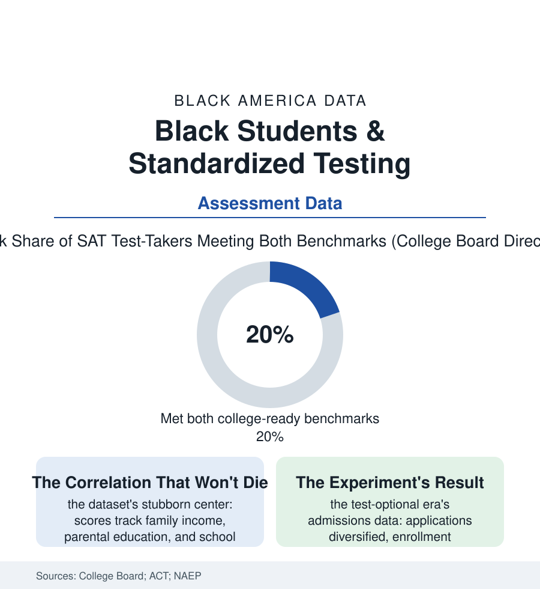

Black Education
The Test: Standardized Scores and What They Actually Measure
The score gaps are real, published annually, and argued over eternally. Read closely, the testing data measure a student's resources as faithfully as her reasoning — and the era of the test-optional experiment is now grading the test itself.

Every autumn the score reports land like weather: the averages by race, the gaps rehearsed in headlines, the argument restarting from its standing positions. The testing file deserves better than the ritual. The data — the College Board's, ACT's, and the federal NAEP's — describe a measurement that is simultaneously real, consequential, and persistently misunderstood by everyone who cites it. This article reads the test file.
What the Numbers Measure
The gaps are not in dispute in any dataset: the SAT and ACT means and benchmark rates by race run, in the recent annual reports, with Black students' college-ready rates at roughly a third to a half of the highest groups' — the distributions shifted entire, not nicked at the tail. The fight is over the instrument's meaning, and the data speak to it with unusual clarity on three points. First, the score's strongest correlates are not mysteries of talent: the income gradient runs through the College Board's own published cuts like a contour line (each income band's mean rising with the band), the parental-education gradient beside it, the school-resource variables of this section's funding file beneath both — the test measuring, with excellent fidelity, the accumulated educational environment the student was issued. Second, the tests are not thereby useless: the predictive-validity literature, including the testing agencies' own large studies, finds scores forecasting first-year college performance comparably across groups and adding information over grades alone — the instrument biased, in the technical literature's careful language, far less than its uses, its cutoffs converting a gradient of preparation into a binary of belonging. Third, the preparation economy writes its signature through every cycle: the prep courses and private tutors of the shadow-education file priced in the thousands, the free official practice platforms of the recent reforms posting their measured gains for the students who find them — a variable, in the usage data, of the same zip codes as everything else. The NAEP file adds the long view the annual ritual lacks: the gaps' great narrowing in the 1970s and 80s under the era of investment and enforcement, the stall thereafter, the recent pandemic widening recorded in the 2022–24 releases — the test, whatever else it is, functioning as the section's longest continuous audit of the nation's follow-through.
The Optional Era and the Return
The test-optional movement — accelerated by the pandemic into the policy of most American colleges within two admission cycles — constitutes the file's great natural experiment, and its results are now in the research: applications from Black and low-income students rose at the newly optional selective colleges (the test's presence in the requirement list measurably deterring the qualified-uncertain, the deterrence itself a finding about what the score communicates before it measures), enrollments diversifying modestly at the institutions that paired the policy with recruitment and aid, the enrolled students' outcomes tracking their predecessors' — the catastrophe forecasts of both camps failing, in the data, to materialize at scale. The counter-movement of the recent cycles — the highly publicized reinstatements at a shelf of elite universities, argued on the ground that scores help identify the talented poor student the grades of unequal schools conceal — has its own evidence, and the file records the debate's maturity: both camps now argue from the same datasets about the same equity, the argument having narrowed, honorably, to which imperfect instrument errs kinder. Beneath the admissions theater, the K-12 testing file grinds on in its own data: the state assessments' gaps published with the school report cards, the accountability regimes' uses and abuses, the opt-out movements, the new adaptive instruments — and the students themselves, in the survey data, reporting the test as the least of their obstacles, a finding the adults' war over the instrument rarely pauses to hear. The score is a photograph of a system, taken annually. The annual argument treats it as a portrait of the children. The data support only the first reading, and this file holds to it.
Reading the Testing Data
The testing file is the education section's most-cited and least-read shelf: an instrument that measures the environment faithfully and the child partially, used — at its best — to audit the first and, at its worst, to sentence the second. The College Board publishes the scores. The funding tables published them first, in dollars, years before the children sat down.
More in Black Education
Black Educational Attainment: High School Parity, the College Gap
About 89 percent of Black adults hold a high school diploma and one in four holds a bachelor's degree or higher — the attainment ladder, the college completion gap, and the generational trend.
Historically Black Colleges and Universities: Enrollment and Degrees
More than 100 HBCUs enroll roughly 290,000 students and award about one in six Black bachelor's degrees — an outsized share from a small sector. The federal education data.
Black College Enrollment: 2.4 Million Students
About 2.4 million Black students are enrolled in American colleges — nearly two-thirds of them women. The NCES enrollment data by sector, level, and trend.
Source: College Board and ACT annual score reports; National Center for Education Statistics NAEP data; university admissions research; Education Trust analyses.